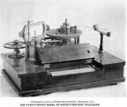
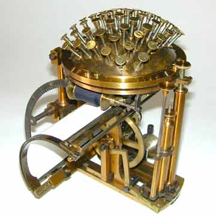
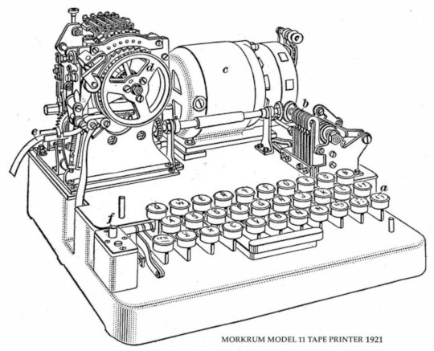

Helping the World Become More Friendly
- Hilda Clark Fairchild
1714 - Before the Typewriter
 The first person to think and patent anything close to a Typwriter was Henry Mill who vaguely patents "Writing Machine" in January 7, 1714.
The first person to think and patent anything close to a Typwriter was Henry Mill who vaguely patents "Writing Machine" in January 7, 1714.
1808 - Myth or Legend
 The first person to actually invent something that could have been similar to the Typewriter was Italian Pellegrino Turri in 1808, who made a typwriter-like machine for his blind lady friend; although we do not have any physical evidence of the machine itself, there are letters that survived. There is even a book about the story called The Blind Contessa's New Machine by Carey Wallace
The first person to actually invent something that could have been similar to the Typewriter was Italian Pellegrino Turri in 1808, who made a typwriter-like machine for his blind lady friend; although we do not have any physical evidence of the machine itself, there are letters that survived. There is even a book about the story called The Blind Contessa's New Machine by Carey Wallace
1845 - The Keyboard is Called a Keyboard for a Reason Right?
The Telegraph Machine was made and patented in 1845 for the House Printing Telegraph. It was designed after the piano.
1868 - The First Typing Machine
The Hansen Writing Ball’s was finalized in 1868 and is referred to the first real typewriter because it is the closest evidence to something very close. It has a keyboard and types letters. The only problem might have been the aesthetic and ergonomics.
1873 to 1878 - The First Modern Typewriter
 Christopher Latham Sholes invents the Modern Mechanical keyboard in 1873 and although it didn't hit record sales as expected, the weapon manufacturing company, Remington Company, worked with the Sholes and James Denmore to manufacture and advertise it as the Remington Typewriter. Sholes and Denmore patent the typewriter and the QWERTY layout used on it.
Christopher Latham Sholes invents the Modern Mechanical keyboard in 1873 and although it didn't hit record sales as expected, the weapon manufacturing company, Remington Company, worked with the Sholes and James Denmore to manufacture and advertise it as the Remington Typewriter. Sholes and Denmore patent the typewriter and the QWERTY layout used on it.
1925 - Telegraphs plus Typewriters = Typographers
The Typewriter was improving with more and more manufactures making them, but there were still other inventors looking to make other typing machines. The Morkrum Printing Telegraph was patented in 1904 by Charles Krum and in 1908, the first working Telegraph was made. Morkrum Printing Telegraph was later sold commercially in 1910. They grew in success over time and were at their peak in 1925.